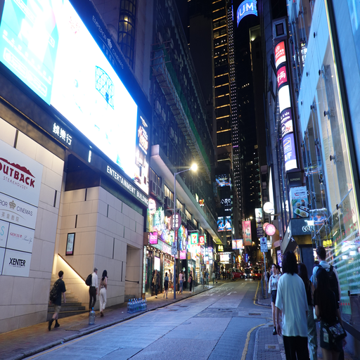
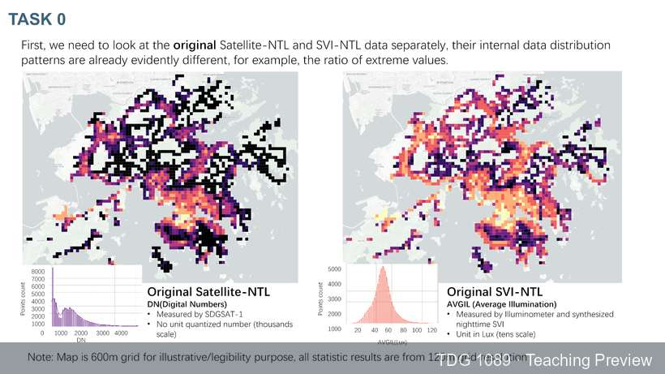
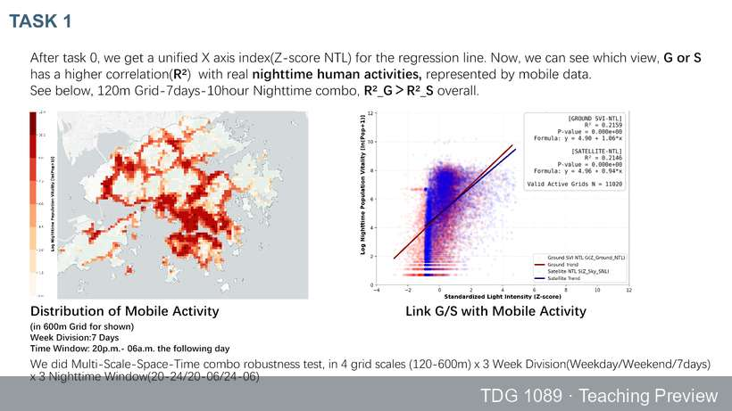
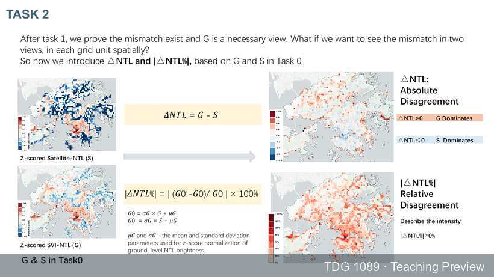
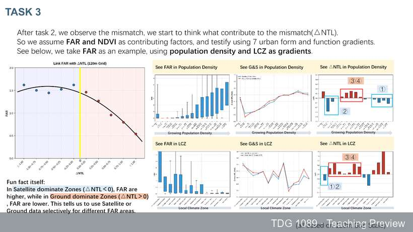
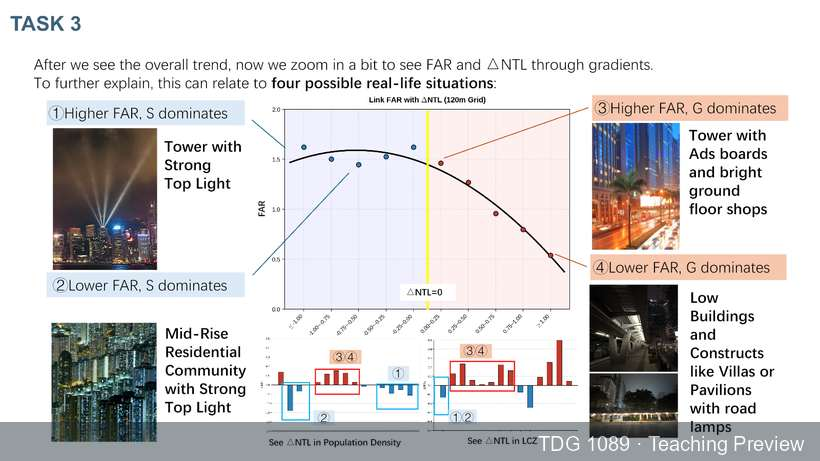
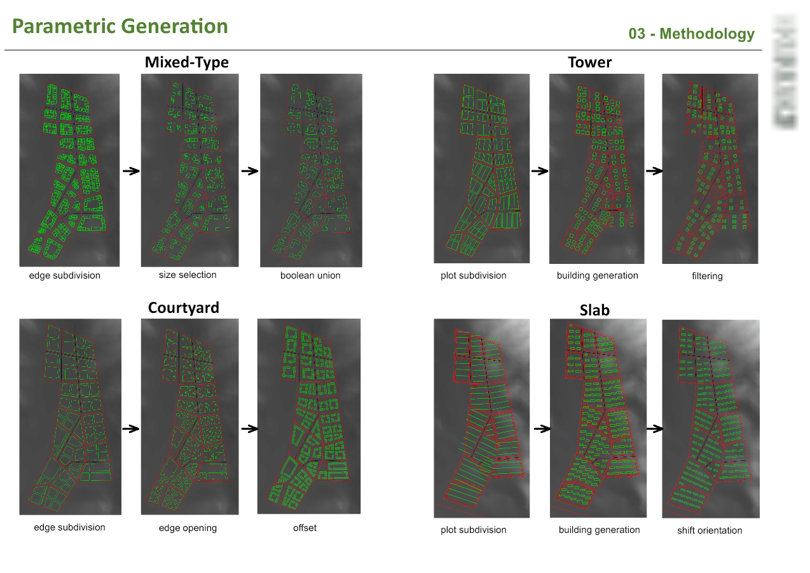
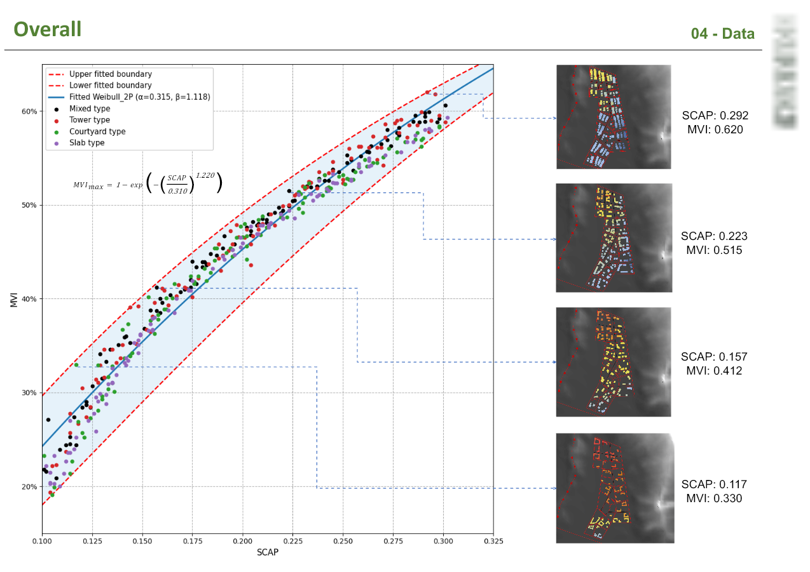

Observe
Assemble site, satellite, street-view and contextual data.
TDG Project 1089 · Project Outcome Resource
From 24-hour site observation to evidence-based design iteration
This project integrates generative image methods, urban sensing, human perception assessment and performance-led morphology exploration into a coherent teaching workflow. Students move from observing urban conditions, to interpreting how space is perceived and used, to generating and evaluating design alternatives.
One iterative learning loop
The phase titles follow the project proposal. They are taught as a connected sequence: each phase produces evidence or design decisions required by the next, while evaluation returns students to renewed observation.
Diffusion- and GAN-based image generation supports comprehensive 24-hour environmental audits.
Environmental representations are related to observed patterns of urban activity and spatial mismatch.
AI-enhanced creative processes support the generation, evaluation and refinement of design alternatives.
Return path: evaluated alternatives become new visual and spatial conditions for observation, perception assessment and design refinement.
Phase 1 · Existing project output
Urban sites change across the day. When nighttime street imagery is incomplete or inconsistent, synthetic views can support systematic comparison, while human assessment helps determine whether generated scenes preserve meaningful perceptual qualities.
Assemble site, satellite, street-view and contextual data.
Generate nighttime street views from daytime imagery with NightDiff.
Compare real and synthetic scenes through visual and human assessment.
Paired image evidence

Ground-truth nighttime stimulus · GT 0607. Select NightDiff to inspect the paired synthetic view.
Transition from Phase 1 to Phase 2
No single dataset explains how urban space works at night. Phase 2 combines complementary evidence while keeping their meanings distinct.
Human ratings describe how a scene is visually interpreted.
Satellite nighttime light and street-level illumination describe different physical representations.
Nighttime mobile activity provides a spatial and temporal proxy for where people are present.
Interpretive boundary: brightness is not equivalent to safety, activity or social interaction. The teaching method asks students to compare these constructs, not collapse them into one measure.
Phase 2 · Selected student study
The supplied nighttime audit demonstrates a sequential urban-analysis workflow: compare environmental representations, examine their relationship with observed activity, and map where they disagree. The evidence supports comparative and associational analysis; predictive-model claims require separate model results.

Research question

Research question



Research question
Mismatch is treated as a diagnostic signal. It directs attention to locations where top-down brightness and street-level illumination tell different stories, then supports closer examination of morphology, vegetation, population and lighting configuration.
Transition from Phase 2 to Phase 3
Analysis becomes useful for design when observed conditions are translated into controllable variables, planning constraints and explicit performance objectives.
Identify where representations and observed activity diverge; examine FAR, NDVI, population and LCZ gradients.
Select relevant variables such as height distribution, site coverage, setback, orientation, ground-floor interface, vegetation and lighting placement.
Apply constraints, compare performance measures, select alternatives and refine the design.
The nighttime study identifies analytical questions and possible built-environment contributors. The MVI study below demonstrates the method of constrained morphology generation and evaluation. It is not presented as a direct empirical solution to nighttime-light mismatch.
Phase 3 · Selected student design study
The supplied MVI study demonstrates how students can move from an environmental-performance objective to a constrained design search. Four morphology families are generated under a fixed plot ratio, evaluated, compared and translated into design implications.

Design sequence

Evaluation sequence
Integrated teaching demonstration
The project-wide teaching loop can be closed by representing selected morphology alternatives under day and night scenarios, asking people to assess the resulting scenes, and comparing those responses with design-performance criteria. This is a proposed integration of the supplied outputs, not an already completed causal experiment.
Teaching resources and dissemination
The page combines existing project outputs and selected teaching cases into a reusable workflow. Documentation separates demonstrated evidence from the new integration framework.
NightDiff-assisted environmental representation and a 24-hour urban audit workflow.
Participatory comparison of real and synthetic nighttime imagery within the site-information workflow.
Try the compact demonstration →Compare environmental representations, examine observed activity and diagnose spatial mismatch.
Review the analytical sequence →Generate morphology alternatives, evaluate performance and return findings to the next design iteration.
Review the design sequence →